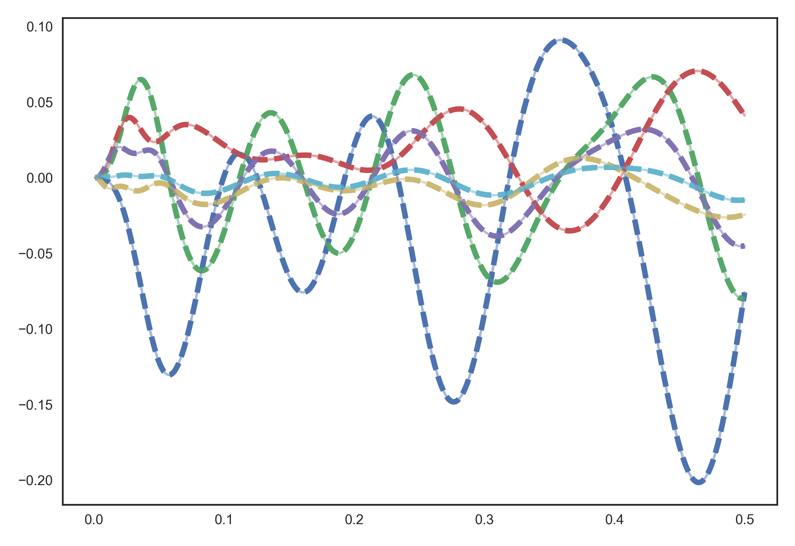

nengolib.synapses.ss2sim¶
-
nengolib.synapses.ss2sim(sys, synapse, dt)[source]¶ Maps a linear system onto a synapse in state-space form.
This implements a generalization of Principle 3 from the Neural Engineering Framework (NEF). [1] Intuitively, this routine compensates for the change in dynamics that occurs when the integrator that usually forms the basis for any linear system is replaced by the given synapse. This is needed because in neural systems we don’t have access to a perfect integrator; instead the synapse model becomes the “dynamical primitive”.
Parameters: sys :
linear_system_likeLinear system representation of desired dynamical system. Requires
sys.analog == synapse.analog.synapse :
linear_system_likeLinear system representation of the synapse providing the dynamics. Requires
sys.analog == synapse.analog.dt :
floatorNoneTime-step of simulation. If not
None, then bothsysandsynapseare discretized using the'zoh'method. In either case, ifsysis now digital, then the digital generalization of Principle 3 will be applied — otherwise the analog version will be applied.Returns: Linear system whose state-space matrices yield the desired dynamics when using the synapse model instead of an integrator.
See also
Notes
This routine is called automatically by
LinearNetwork.Principle 3 is a special case of this routine when called with a continuous
Lowpass()synapse anddt=None. However, specifying thedt(or providing digital systems) will improve the accuracy in digital simulation.For higher-order synapses, this makes a zero-order hold (ZOH) assumption to avoid requiring the input derivatives. In this case, the mapping is not perfect. If the input derivatives are known, then the accuracy can be made perfect again. See references for details.
References
[1] A. R. Voelker and C. Eliasmith, “Improving spiking dynamical networks: Accurate delays, higher-order synapses, and time cells”, 2017, Submitted. [URL] Examples
See notebooks/research/discrete_comparison.ipynb for a notebook example.
>>> from nengolib.synapses import ss2sim, PadeDelay
Map the state of a balanced
PadeDelay()onto a lowpass synapse:>>> import nengo >>> from nengolib.signal import balance >>> sys = balance(PadeDelay(.05, order=6)) >>> synapse = nengo.Lowpass(.1) >>> mapped = ss2sim(sys, synapse, synapse.default_dt) >>> assert np.allclose(sys.C, mapped.C) >>> assert np.allclose(sys.D, mapped.D)
Simulate the mapped system directly (without neurons):
>>> process = nengo.processes.WhiteSignal(1, high=10, y0=0) >>> with nengo.Network() as model: >>> stim = nengo.Node(output=process) >>> x = nengo.Node(size_in=len(sys)) >>> nengo.Connection(stim, x, transform=mapped.B, synapse=synapse) >>> nengo.Connection(x, x, transform=mapped.A, synapse=synapse) >>> p_stim = nengo.Probe(stim) >>> p_actual = nengo.Probe(x) >>> with nengo.Simulator(model) as sim: >>> sim.run(.5)
The desired dynamics are implemented perfectly:
>>> target = sys.X.filt(sim.data[p_stim]) >>> assert np.allclose(target, sim.data[p_actual])
>>> import matplotlib.pyplot as plt >>> plt.plot(sim.trange(), target, linestyle='--', lw=4) >>> plt.plot(sim.trange(), sim.data[p_actual], alpha=.5) >>> plt.show()
